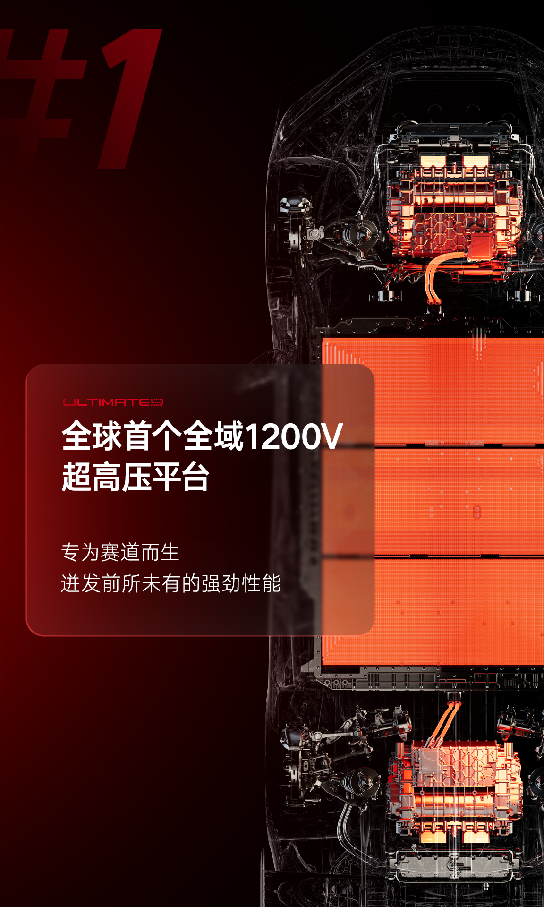
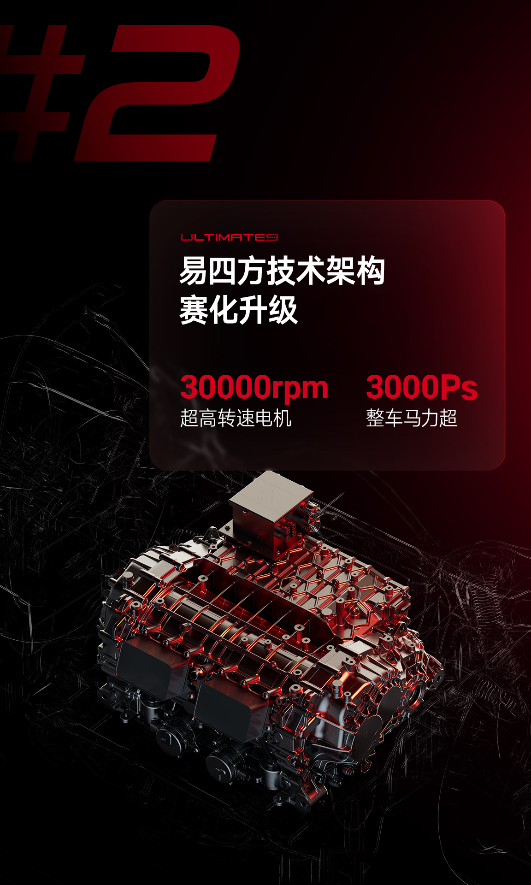
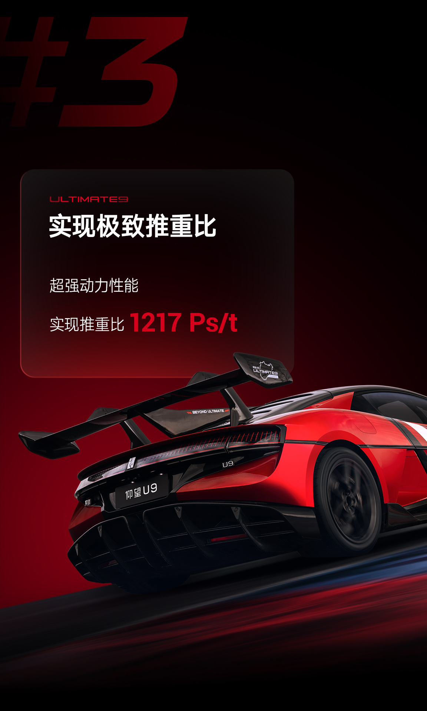
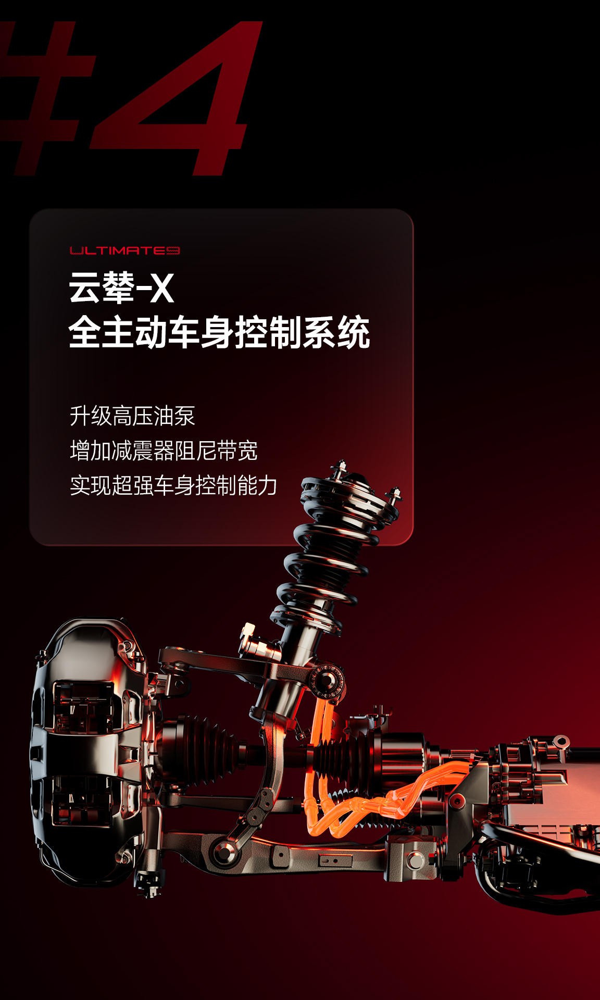
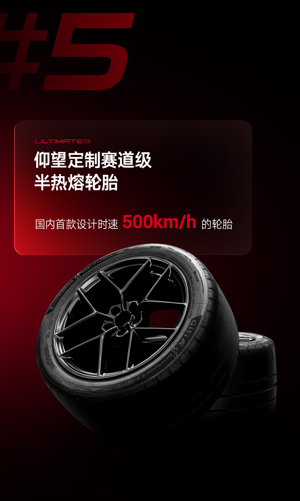

2023
U9 · 亮相
1,305 Ps
仰望首款超级跑车 U9 于上海车展亮相，易四方四电机与云辇-X 首次同台。
YANGWANG · 2025
U9 XTREME · THE PURSUIT BEYOND
源自比亚迪 30 年电动化沉淀，
目标打破超级跑车极速、圈速「双第一」的不可能边界。
墨守成规的思维模式，创造不了突破极限的超级跑车。颠覆时代的汽车，来自那些不服输的灵魂。
仰望 U9 Xtreme，源自比亚迪 30 年深厚电动化沉淀，将工程师对新能源汽车最极致的性能畅想融为一体，目标打破超级跑车极速、圈速「双第一」的不可能边界。
「Xtreme」取自英文单词 Extreme，宣告它的产品本源——超越极致，为探索绝对速度边界而生。
1,305 Ps
仰望首款超级跑车 U9 于上海车展亮相，易四方四电机与云辇-X 首次同台。
391.94 km/h
U9 正式上市，实测最高车速 391.94 km/h，成为彼时中国最快量产车。
超 3,000 Ps
赛道特化版本 U9 Xtreme 发布：全域 1200V 平台、30,000 rpm 电机、全球限量 30 台。
X，代表未知与边界。象征在技术无人区不断探索的信念——揭示出仰望 U9 Xtreme 的使命：以极致实力，标定新能源创新技术的巅峰。
将未知的 X，转化为现实的 Dream Car。把那个看似异想天开的梦想，通过极致的技术与纯粹的专注，在现实中锻造出时代传奇。
一条不足 2.5 英里的直道，三圈冲击，一次改写世界汽车极速榜的冲刺。
全球汽车极速第一 · ATP 帕彭堡
德国 ATP 帕彭堡测试场。三圈，三次冲击：300、302、308.4 mph——世界纪录被改写。全球量产车极速第一，超越 2019 年布加迪 Chiron Super Sport 300+ 的 304.8 mph。
ATP 帕彭堡的高速椭圆，弯道倾角 49.7°，推荐上限 250 km/h——而 U9 Xtreme 出弯时，车速已至 300 km/h。车手 Marc Basseng 甚至说，弯道出得还可以更快，只是不想把横向载荷压给轮胎。
直道不足 2.5 英里，不到布加迪当年创造 304.8 mph 的 Ehra-Lessien 的一半。但电动时代的加速，让这段直道已经足够。

纪录达成后，遥测数据显示：全油门还可以再多 1.5 秒。首席工程师 Daniel Yin 确认，动力仍有 250 kW 余量。
轮胎为 500 km/h 而生——鼓测 9 分钟安然无恙；而真正的极速，只维持了 3 到 4 秒。还有余力——突破 500 km/h。


20.8 公里、73 个弯。纯电量产车，第一次在纽博格林北环冲进 7 分钟。
纽北量产电车圈速第一 · 纽博格林北环
6:59.157——纯电量产车第一次冲进 7 分钟，比前任纪录（Rimac Nevera · 7:05.298）快了整整 6 秒。
从 Bergwerk 的连续急弯，到 Döttinger Höhe 的长直道，全程 6:59.157，一气呵成——首款突破 7 分钟大关的纯电量产车。
2025 年 8 月 22 日达成，10 月 21 日认证公布。极速、圈速「双第一」就此写定。


为北环特调。针对纽北开发的动能回收算法，更好地分担机械制动压力——长达 20.8 公里的连续重刹区，制动系统始终稳定、耐久。

纪录之后。2025 年 11 月，株洲、珠海、成都天府、上海国际四条赛道，U9 Xtreme 全部拿下量产车最快圈速。
征服北环，成为首款突破 7 分钟大关的纯电量产车，刷新量产电车圈速纪录。
三圈冲刺，以 308.4 mph 登顶全球量产车极速第一，超越布加迪 Chiron Super Sport 300+。
于郑州航空港区比亚迪赛车场全球首发，全球限量 30 台，开放预订。
纽北圈速认证正式发布——极速、圈速「双第一」就此写定。
[ 易四方 + 云辇-X ] 正是传递给当代汽车工程师，打开下一传奇纪元的钥匙。
一百三十年来，赛道的一切都围绕轮胎、马力与轻量化打转。新能源时代，我们为赛道注入一个超跑从未有过的变量——「全主动车身姿态控制」。
易四方掌控纵横向姿态，在复杂路面激励下稳住动力与车身；云辇-X掌控垂向姿态，独立控制四轮悬挂主动力，精准调配轴荷转移与质量分布，让弯道更可控、更安全。二者深度融合，纯电超跑的物理极限被彻底重塑。

全球首个量产的全域 1200V 高压平台，专为赛道性能而生。冷却系统重构，总功率提升 133%；大流量油泵与立体电机冷却，电驱总换热效率提升 40%——持续极限输出下峰值性能始终稳定，抑制热衰减。

4 个全球首款量产高转电机，单个峰值功率 555 kW，整车超 3,000 马力。仅凭轮端扭矩矢量分配即可创造转向所需的横摆力矩——不依赖前轮转角的「扭矩转向」。

超 3,000 Ps 的马力，分摊到 2,480 kg 的整备质量上——每吨车重享有 1,217 Ps。电机采用高强度航空级铝合金壳体与 970 MPa 转子，高转速、高功率密度。

全面匹配 1200V 高压平台，成为全球首个千伏超高电压全主动车身控制系统。赛道工况下四轮悬架快速独立调节，抑制俯仰与侧倾；减小侧倾增强轮胎与地面接触力，提升抓地性能。

与佳通联合开发的 GitiSport e·GTR2ᴾᴿᴼ 半热熔轮胎：超高强度芳纶纤维束缚离心膨胀，高速驻波抑制技术突破 500 km/h 壁垒；RaceGrip Pro 配方摩擦系数提升 38% 以上。

钛合金卡钳：高刚性、低导热，制动力精准传递。碳陶刹车盘：斜槽打孔提升摩擦系数与冷却效率，峰值工作温度降低 48℃。动能回收融合机械制动：针对纽北开发的能量回馈算法，分担机械制动压力。

全球最大的单体壳碳舱：宇航级 T700 级 12K 高性能碳纤维，整车用量超 110 kg。碳纤维密度仅为钢材的 1/5，强度可达 5–6 倍。
传统手工艺的细腻与纯电超跑的硬核科技，在「破晓时刻」完美融合。
将 5 到 10 微米的超细金粉，手工撒入纯黑车漆。清漆层层锁住，阳光下，像破晓时分穿透云层的光。
车身沿用传统大漆打磨技法，在哑光金部分，工匠层层喷涂、研磨，把温暖质感浸刻在车身之上。这一命名源自 U9X 打破世界纪录的清晨——第一缕阳光穿透云层。2026 年 4 月，量产版「破晓时刻」在北京车展完成全球首秀。


全部数据，一次列清。
* 以上均为已公布数据。0–100 km/h 加速时间等参数，将在公布后第一时间更新。